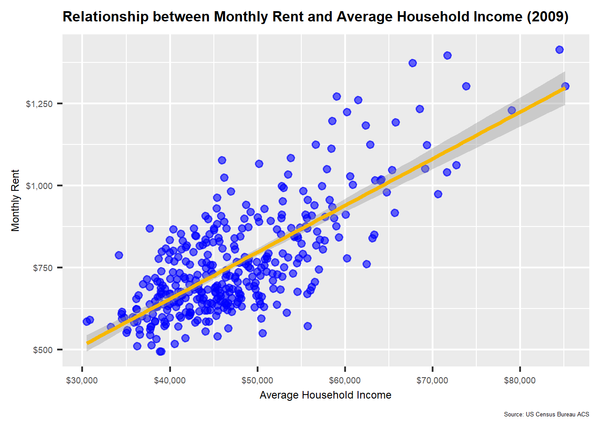
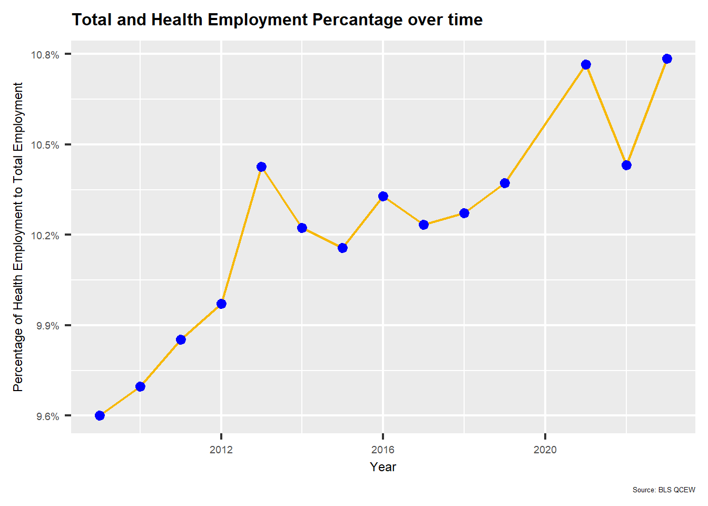
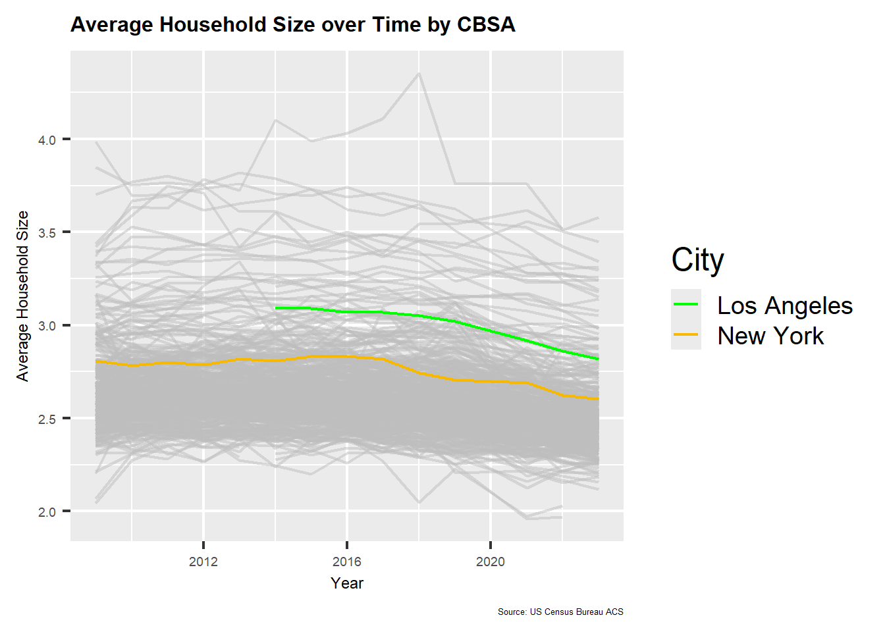
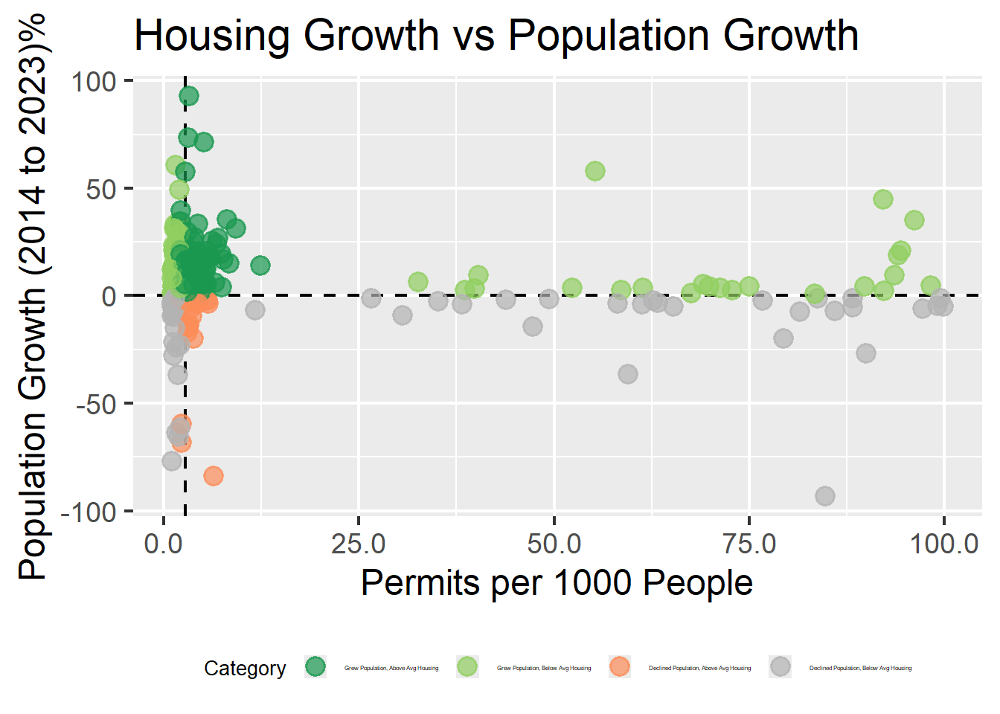

Mini-Project 02 - Making Backyards Affordable for All
Author
Stanley Louie
Published
November 2, 2025
Introduction
Housing affordability is an increasing challenge to many metropolitan areas. Rent growth has begun to outpace income, causing financial strain on many households. In this mini-project, we will explore data from the US Census Bureau and the Bureau of Labor Statistics to analyze housing affordability trends across different metropolitan areas in the United States. We will compute rent burden metrics, housing growth metrics, and identify metropolitan areas that have successfully managed to provide affordable housing options for their residents.
Data Acquisition and Preparation
Grabbing data from US Census Bureau.
Code
if(!dir.exists(file.path("data", "mp02"))){dir.create(file.path("data", "mp02"), showWarnings=FALSE, recursive=TRUE)}library <-function(pkg){## Mask base::library() to automatically install packages if needed## Masking is important here so downlit picks up packages and links## to documentation pkg <-as.character(substitute(pkg))options(repos =c(CRAN ="https://cloud.r-project.org"))if(!require(pkg, character.only=TRUE, quietly=TRUE)) install.packages(pkg)stopifnot(require(pkg, character.only=TRUE, quietly=TRUE))}library(dplyr)library(tidyverse)library(glue)library(readxl)library(tidycensus)library(ggplot2)library(gghighlight)library(scales)library(DT)get_acs_all_years <-function(variable, geography="cbsa",start_year=2009, end_year=2023){ fname <-glue("{variable}_{geography}_{start_year}_{end_year}.csv") fname <-file.path("data", "mp02", fname)if(!file.exists(fname)){ YEARS <-seq(start_year, end_year) YEARS <- YEARS[YEARS !=2020] # Drop 2020 - No survey (covid) ALL_DATA <-map(YEARS, function(yy){ tidycensus::get_acs(geography, variable, year=yy, survey="acs1") |>mutate(year=yy) |>select(-moe, -variable) |>rename(!!variable := estimate) }) |>bind_rows()write_csv(ALL_DATA, fname) }read_csv(fname, show_col_types=FALSE)}# Household income (12 month)INCOME <-get_acs_all_years("B19013_001") |>rename(household_income = B19013_001)# Monthly rentRENT <-get_acs_all_years("B25064_001") |>rename(monthly_rent = B25064_001)# Total populationPOPULATION <-get_acs_all_years("B01003_001") |>rename(population = B01003_001)# Total number of householdsHOUSEHOLDS <-get_acs_all_years("B11001_001") |>rename(households = B11001_001)
Manually grabbing number of new housing units built each year
Albuquerque, NM (CBSA Number 10740) permitted the most new housing units in the year 2021 with 4,021 units permitted.
Which state (not CBSA) had the highest average individual income in 2015? To answer this question, you will need to first compute the total income per CBSA by multiplying the average household income by the number of households, and then sum total income and total population across all CBSAs in a state. With these numbers, you can answer this question.
The state with the highest average individual income in 2015 is DC with an average individual income of $33,232.88.
Data scientists and business analysts are recorded under NAICS code 5182. What is the last year in which the NYC CBSA had the most data scientists in the country? In recent, the San Francisco CBSA has had the most data scientists. For this question, you may simply create a table of which CBSA had the most data scientists each year and then answer the question in the following text.
Code
areas <- combined_data |>select(NAME,std_cbsa)data_sci <- WAGES |>filter(INDUSTRY ==5182) |>group_by(YEAR,std_cbsa) |>filter(EMPLOYMENT !=0) |>summarise(max_employment =max(EMPLOYMENT, na.rm =TRUE)) |>slice_max(order_by = max_employment)#join table to get the citydata_sci <-inner_join(data_sci, areas, by ="std_cbsa") |>distinct()#code for table
The last year in which the NYC CBSA had the most data scientists in the country was 2015.
What fraction of total wages in the NYC CBSA was earned by people employed in the finance and insurance industries (NAICS code 52)? In what year did this fraction peak?
Code
# get the sum of total wages in NYC cbsa per yeartotal_wages_sum <- WAGES |>filter(std_cbsa =="C35620") |>group_by(YEAR) |>summarise(sum_total_wages =sum(TOTAL_WAGES))# get the sum of financial wages in NYC cbsa per yearfinancial_wages_sum <- WAGES |>filter(std_cbsa =="C35620", str_starts(as.character(INDUSTRY), "52")) |>group_by(YEAR) |>summarise(sum_financial_wages =sum(TOTAL_WAGES))# join both and calculate fractionwage_fraction <-inner_join(total_wages_sum, financial_wages_sum, by ="YEAR") |>mutate(fraction_of_financial_wages = sum_financial_wages / sum_total_wages) |>arrange(desc(fraction_of_financial_wages))# getting the total fractiontotal_fraction <- wage_fraction |>summarise(fraction_total =sum(sum_financial_wages) /sum(sum_total_wages) *100)
The fraction of total wages in the NYC CBSA earned by people employed in the finance and insurance industries is 13.29%. This fraction peaked in the year 2021 with a fraction of 15.45%.
Initial Visualizations
The relationship between monthly rent and average household income per CBSA in 2009.
Code
p1 <-ggplot(combined_data |>filter(year ==2009), aes(x = household_income, y = monthly_rent)) +geom_point(alpha =0.6, color="blue") +geom_smooth(method ="lm", color ="#F7B800") +labs(title ="Relationship between Monthly Rent and Average Household Income (2009)",x ="Average Household Income",y ="Monthly Rent",caption ="Source: US Census Bureau ACS") +theme_grey( base_size =18) +scale_x_continuous(labels = scales::dollar_format()) +scale_y_continuous(labels = scales::dollar_format()) +theme(plot.title =element_text(size =12, face ="bold"),plot.caption =element_text(size =5),axis.title =element_text(size =9),axis.text =element_text(size =7))print(p1)

The scatter plot shows a strong positive relationship between household income and monthly rent in 2009. Metro areas tend to have higher average household incomes which results in higher monthly rents. The linear regression line indicates that as household income increases, monthly rent also tends to increase.
The relationship between total employment and total employment in the health care and social services sector (NAICS 62) across different CBSAs. Design your visualization so that it is possible to see the evolution of this relationship over time.
Code
# get the total employment per year per cbsaemp_total <- WAGES |>group_by(YEAR) |>summarise(total_employment =sum(EMPLOYMENT)) |>ungroup()# get total employment of healthhealth_total <- WAGES |>filter(str_starts(as.character(INDUSTRY), "62")) |>group_by(YEAR) |>summarise(health_employment =sum(EMPLOYMENT)) |>ungroup()# join both and calculate fractiongrouped_emp <-inner_join(emp_total, health_total, by ="YEAR") |>mutate(fraction_health_employment = health_employment / total_employment)p2 <-ggplot(grouped_emp, aes(x= YEAR, y =fraction_health_employment)) +geom_line(size =0.8, color ="#F7B800") +geom_point(color ="blue") +labs(title ="Total and Health Employment Percantage over time",x ="Year",y ="Percentage of Health Employment to Total Employment",caption ="Source: BLS QCEW") +theme_grey(base_size =18) +scale_y_continuous(labels = scales::percent_format(accuarcy =1)) +theme(plot.title =element_text(size =12, face ="bold"),plot.caption =element_text(size =5),axis.title =element_text(size =9),axis.text =element_text(size =7))print(p2)

The plot shows an increase of percentage of Health Employees to Total Employees over time. This indicates that the health care and social services sector has been growing in the economy. There was noticeable growth from 2019 to 2021 due to the pandemic.
The evolution of average household size over time. Use different lines to represent different CBSAs.
Code
p3 <-ggplot(combined_data, aes(x= year, y = population / households, group = GEOID, color =case_when(GEOID ==35620~"New York", GEOID ==31080~"Los Angeles"))) +geom_line(linewidth =0.8) +scale_color_manual(values =c("New York"="#F7B800", "Los Angeles"="green"),name ="City") +gghighlight(GEOID %in%c(35620, 31080), use_direct_label =FALSE, unhighlighted_params =list(alpha=0.5)) +labs(title ="Average Household Size over Time by CBSA",x ="Year",y ="Average Household Size",caption ="Source: US Census Bureau ACS") +theme_grey(base_size =18) +theme(plot.title =element_text(size =12, face ="bold"),plot.caption =element_text(size =5),axis.title =element_text(size =9),axis.text =element_text(size =7))print(p3)

The plot shows the average household size over time for different CBSAs, with a focus on New York and Los Angeles. Both cities show a slight decrease in average household size over the years, indicating a trend towards smaller households in these metropolitan areas.
Rent burden is used to measure percentage of income spent on rent. I’ve standardized the metric so that 0 would be the lowest burden and 100 would be the highest in the observed data.
Los Angeles has seen a small increase in rent burden from 2009 to 2023, with the Rent Burden Score rising from approximately 47.26 in 2009 to 52.91 in 2023 while drastically increasing in Household Income. The rent burden has been in the range from 24% to 26%.
The lowest rent burden score is Bismarck, North Dakota with a 5.27 rent burden score with residents spending only 13.7% of their income on rent.
Instantaneous Housing Growth
Code
task5_table <- POPULATION |>inner_join(PERMITS, by=c("year", 'GEOID'='CBSA'))# Calculate 5-year growth using lag functionpopulation_growth_5yr <- task5_table |>arrange(NAME, year) |>mutate(pop_5yrs_ago =lag(population, 5),pop_growth_5yrs = population -lag(population, 5),pop_growth_5yr_percent = (population -lag(population, 5)) /lag(population, 5) *100,permits_per_1000 = (new_housing_units_permitted / population) *1000) |>ungroup()# Average permits per 1000 in 2014 as baselinehousing_growth <- population_growth_5yr |>filter(year ==2014) |>summarise(baseline =mean(permits_per_1000, na.rm =TRUE)) |>pull(baseline)# Index where 100 = 2014 baselinepopulation_growth_5yr <- population_growth_5yr |>mutate(instantaneous_score = (permits_per_1000 / housing_growth) *100 )pop_table <- population_growth_5yr |>filter(year >=2014) |>select('City'= NAME,'Year'= year,'Population (5 yrs Ago)'= pop_5yrs_ago,'New Housing Units Permitted'= new_housing_units_permitted,'Population Growth (5 yr)'= pop_growth_5yrs,'Population Growth (5 yr %)'= pop_growth_5yr_percent,'Permits per 1000 People'= permits_per_1000,'Instantaneous Score'= instantaneous_score ) |>drop_na() |>mutate(`Population Growth (5 yr %)`= scales::percent(`Population Growth (5 yr %)`/100, accuracy =0.1),`Permits per 1000 People`=round(`Permits per 1000 People`, 2),`Instantaneous Score`=round(`Instantaneous Score`, 2) )datatable( pop_table,caption ="Instantaenous Scores",class ="table table-striped table-hover table-dark table-sm",options =list(pageLength =10,autoWidth =TRUE,searching =FALSE),)
Instantaneous Scores above 100, Faster building housing than 2014 average
Instantaneous Scores below 100, Slower building housing than 2014 average
Instantaneous Scores 100, Housing building matches 2014 average
Florida and North/South Carolina Metro Areas have some of the highest Instantaneous Scores, occupying 9 of the top 10 spots, while Illinois, West Virginia, and Arkansas have some of the lowest Instataneous Scores.
Rate Base Housing
Code
# Declining Poppermits_per_new_resident <- population_growth_5yr |>mutate(permits_per_new_resident =case_when( pop_growth_5yrs <=0~ permits_per_1000,TRUE~ new_housing_units_permitted / pop_growth_5yrs),# Prevent outlierscap_ratio =pmin(permits_per_new_resident, 10))# Baseline 2014 avgbaseline_rate <-permits_per_new_resident |>filter(year >=2014, pop_growth_5yrs >0) |>summarise(baseline =mean(cap_ratio, na.rm =TRUE)) |>pull(baseline)# Index where 100 = 2014 baselinepermits_per_new_resident <- permits_per_new_resident |>mutate(rate_score = cap_ratio / baseline_rate *100)rate_table <- permits_per_new_resident |>filter(year >=2014) |>select('City'= NAME,'Year'= year,'Population (5 yrs Ago)'= pop_5yrs_ago,'New Housing Units Permitted'= new_housing_units_permitted,'Ratio of Housing Units to Population Growth'= cap_ratio,'Permits per 1000 People'= permits_per_1000,'Rate Score'= rate_score, ) |>drop_na() |>mutate(`Permits per 1000 People`=round(`Permits per 1000 People`, 2),`Ratio of Housing Units to Population Growth`=round(`Ratio of Housing Units to Population Growth`, 2),`Rate Score`=round(`Rate Score`, 2) )datatable( rate_table,caption ="Rate Scores",class ="table table-striped table-hover table-dark table-sm",options =list(pageLength =10,autoWidth =TRUE,searching =FALSE),)
Rate Scores above 100, Faster building housing than 2014 average population growth
Rate Scores below 100, Slower building housing than 2014 average population growth
Rate Scores 100, Housing building matches 2014 average population growth
There are many different states with extremely high Rate Scores. On the other hand, Connecticut, New York, and Ohio Metro areas have some of the lowest Rate Scores.
This scatter plot visualizes the relationship between early rent burden in 2014 and the change in rent burden up to 2023 for various CBSAs. The dashed lines indicate the median early rent burden and zero change in rent burden. CBSAs in the bottom-right show a desirable YIMBY characteristic of high early rent burden with a decrease over time.
Code
# have had population growth over the study period and have had above-average housing growth during the study period.# finding pop growth from 2014 - 2023pop_for_yimby <- population_growth_5yr |>filter(year %in%c(2014, 2023)) |>select(GEOID, NAME, year, population) |>group_by(GEOID, NAME, year) |>summarize(population =mean(population, na.rm =TRUE)) |>pivot_wider(names_from = year, values_from = population, names_prefix ="pop_") |>drop_na(pop_2014, pop_2023) |>mutate(pop_growth = pop_2023 - pop_2014,pop_growth_percentage =if_else(!is.na(pop_2014) & pop_2014 !=0,100* (pop_2023 - pop_2014) / pop_2014,NA_real_),grew_2014_2023 =if_else(!is.na(pop_growth) & pop_growth >0, TRUE, FALSE) ) combined_data <- pop_for_yimby |>inner_join(permits_per_new_resident |>select(GEOID, permits_per_1000), by ="GEOID") |>distinct(GEOID, .keep_all =TRUE)yimby_data2 <- combined_data |>filter(!is.na(pop_growth) &!is.na(permits_per_1000)) |>mutate(pop_grew = pop_growth >0,above_avg_housing = permits_per_1000 >median(combined_data$permits_per_1000, na.rm =TRUE),category =case_when( pop_grew & above_avg_housing ~"Grew Population, Above Avg Housing", pop_grew &!above_avg_housing ~"Grew Population, Below Avg Housing",!pop_grew & above_avg_housing ~"Declined Population, Above Avg Housing",TRUE~"Declined Population, Below Avg Housing" ),category=factor(category, levels=c("Grew Population, Above Avg Housing","Grew Population, Below Avg Housing","Declined Population, Above Avg Housing","Declined Population, Below Avg Housing"))) |>select(-grew_2014_2023,-pop_grew, -above_avg_housing) |>mutate(across(c(pop_growth_percentage, permits_per_1000),~ { x <-as.numeric(.)if (all(is.na(x))) return(x)if (max(abs(x), na.rm =TRUE) <=1) x <- x *100round(x, 2) }))cat_colors <-c("Grew Population, Above Avg Housing"="#1a9850","Grew Population, Below Avg Housing"="#91cf60","Declined Population, Above Avg Housing"="#fc8d59","Declined Population, Below Avg Housing"="grey70")yimby_graph2 <-ggplot(yimby_data2, aes(x= permits_per_1000, y = pop_growth_percentage, color = category)) +geom_hline(yintercept =0, linetype ="dashed", color ="black") +geom_vline(xintercept =median(yimby_data2$permits_per_1000, na.rm =TRUE), linetype ="dashed", color ="black") +geom_point(size =4, alpha =0.7) +scale_color_manual(values = cat_colors, name ="Category") +scale_x_continuous(labels =label_number(suffix ="", accuracy =0.1)) +scale_y_continuous(labels =label_number(suffix ="", accuracy =1)) +labs(x =paste0("Permits per 1000 People"),y ="Population Growth (2014 to 2023)%",title ="Housing Growth vs Population Growth") +theme_grey(base_size =18) +theme(legend.position ="bottom",legend.title =element_text(size =10),legend.text =element_text(size =3),legend.key.size =unit(0.8, "lines"),legend.spacing.x =unit(0.2, "cm"))print(yimby_graph2)

Code
datatable( yimby_data2,caption ="Housing Growth vs Population Growth",class ="table table-striped table-hover table-dark table-sm",options =list(pageLength =10,autoWidth =TRUE,searching =TRUE),)
This scatter plot visualizes the relationship between housing growth (measured as permits per 1000 people in 2023) and population growth from 2014 to 2023 for various CBSAs. The dashed lines indicate the median housing growth and zero population growth. CBSAs in the top-right quadrant show desirable YIMBY characteristics of both population growth and above-average housing growth.
Policy Brief
Introduction
Housing affordability is a critical issue in many metropolitan areas across the United States. Rent prices are growing faster than incomes, leading to increased rent burden for many households. This is not a sustainable situation and requires immediate attention from policymakers. Despite the challenges, some metropolitan areas have successfully implemented policies that have led to decreased rent burden while still experiencing population growth. These areas can serve as models for other cities facing similar issues.
Proposed Sponsors
We would like to reach out to two sponsors for this policy brief: a sponsor from Columbus, GA-AL Metropolitan Area in a YIMBY zone and a co-sponsor from Fresno, CA Metropolitan Area in a NIMBY zone. Both these metropolitan areas have successfully lowered rent burdens while growing in population and opportunities when it comes to housing affordability. By collaborating with sponsors from both YIMBY and NIMBY zones, we can gain a comprehensive understanding of the issue and develop effective strategies to address it across America.
Benefits
Trade, Transportation, and Utilities (NAICS 42-49)
By supporting affordable housing initiatives in Columbus, GA-AL Metropolitan Area and Fresno, CA Metropolitan Area, we can ensure that workers in the Trade, Transportation, and Utilities sector have access to affordable housing options. This will not only improve their quality of life but also enhance their productivity and job satisfaction, leading to a more robust economy in these metropolitan areas. Lower housing costs and reducing rent near transit reduces commute time and stress, which improves overall well-being and reliability. Recruitment agencies will save money on recruitment and retention costs as employees are more likely to stay in jobs where they can afford to live comfortably.
Healthcare and Social Assistance (NAICS 62)
Affordable housing is crucial for healthcare and social assistance workers, who often face high rent burdens. By investing in affordable housing initiatives in Columbus, GA-AL Metropolitan Area and Fresno, CA Metropolitan Area, we can ensure that these essential workers have access to safe and affordable housing options. This will not only improve their quality of life but also enhance their ability to provide quality care to the community. Affordable housing near healthcare facilities can lead to better health outcomes for both workers and patients, as it reduces stress and improves access to care. This can result in lower healthcare costs and improved public health in these metropolitan areas.
Metrics
Rent Burden Index (RBI): is a 0-100 index scale using min-max normalization to standardize rent burden across CBSAs using 2014 as a baseline. A score of 0 indicates the lowest rent burden observed, which is a good thing, while a score of 100 represents the highest rent burden meaning too much income is being spent on rent. This metric allows for easy comparison of rent burdens across different metropolitan areas.
Instantaneous Housing Growth Score: This score measures the rate of housing growth in a metropolitan area compared to the average housing growth in 2014. A score above 100 indicates that the area is building housing at a faster rate than the 2014 average, while a score below 100 indicates slower growth. This metric helps identify areas that are actively addressing housing shortages.
Conclusion
By focusing on metropolitan areas like Columbus, GA-AL and Fresno, CA, which have demonstrated success in reducing rent burdens while experiencing population growth, we can develop effective strategies to address housing affordability across the United States. Investing in affordable housing initiatives will not only improve the quality of life for residents but also contribute to the overall economic health of these metropolitan areas. We urge policymakers to consider these metrics and examples when formulating housing policies to ensure that all residents have access to safe and affordable housing options.